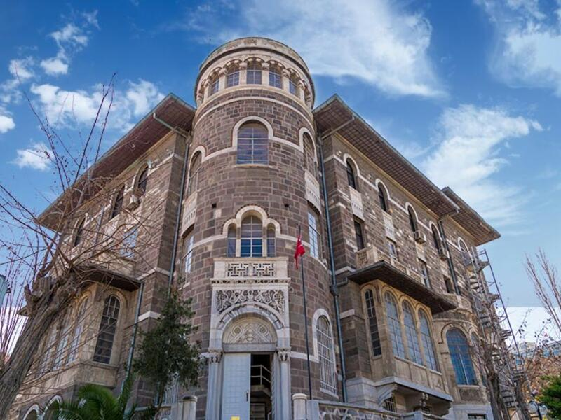
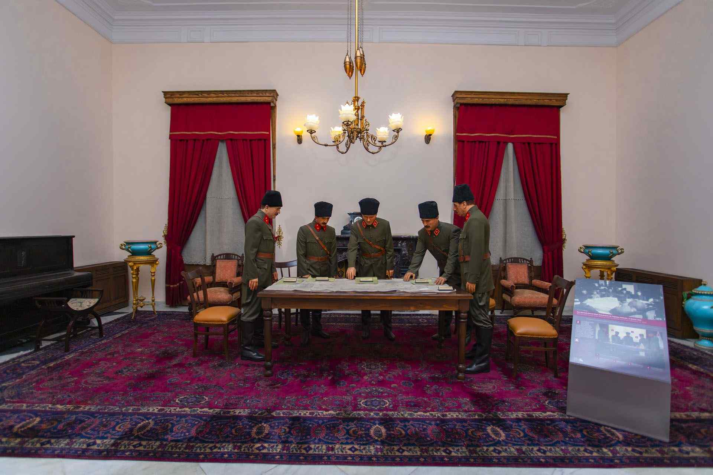

İzmir’deki Müzeler

İzmir Arkeoloji Müzesi
İzmir ve çevresinden çıkarılan antik eserlerin sergilendiği bu müze, tarih meraklıları için eşsiz bir keşif alanıdır.
Adres: Konak, Bahribaba Parkı, İzmir
Ziyaret Saatleri: Her gün 08:30 – 17:30
Giriş: Ücretli (Tam: 100 TL)
Müze Kart: Geçerli

İzmir Atatürk Müzesi
Mustafa Kemal Atatürk’ün İzmir ziyaretlerinde kullandığı bu yapı, günümüzde müze olarak ziyaretçilere açık.
Adres: Alsancak, Atatürk Cd. No:248, Konak/İzmir
Ziyaret Saatleri: Her gün 08:30 – 17:30
Giriş: Ücretsiz
Müze Kart: Gerekli değil

Tarih ve Sanat Müzesi
Heykel, taş eser ve seramik bölümleriyle İzmir’in kültürel birikimini gözler önüne serer.
Adres: Kültürpark Fuar Alanı, Lozan Kapısı, Konak/İzmir
Ziyaret Saatleri: Her gün 08:30 – 17:30
Giriş: Ücretli (Tam: 100 TL)
Müze Kart: Geçerli

Oyuncak Müzesi
Geçmişten günümüze oyuncakların sergilendiği bu eğlenceli müze hem çocuklar hem de nostalji sevenler için keyifli bir duraktır.
Adres: Varyant Yolu, Halil Rıfat Paşa, Konak/İzmir
Ziyaret Saatleri: Salı-Pazar 10:00 – 18:00
Giriş: Ücretli (Tam: 40 TL)
Müze Kart: Gerekli değil

İzmir Kadın Müzesi
Türkiye’nin ilk kadın temalı müzesi olan bu yapı, kadınların toplumsal tarih içindeki izlerini sunmaktadır.
Adres: Basmane, 1298. Sk. No:14, Konak/İzmir
Ziyaret Saatleri: Pazartesi hariç her gün 09:00 – 17:00
Giriş: Ücretsiz
Müze Kart: Gerekli değil